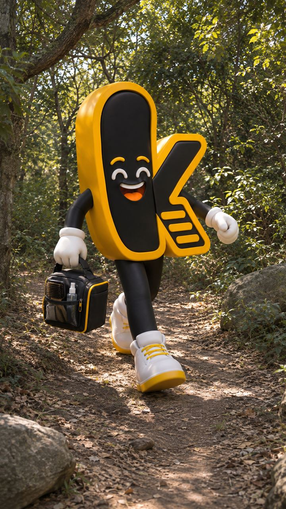

RANDEVUYA KOŞ!
🎁 Tamamen ücretsiz · Tarak Mobil Berber Kuaför Çağır sponsorluğunda
Türkiye Haritası
Caddeler, sokaklar ve dükkânlar gerçek: harita verisi © OpenStreetMap katkıcıları
Randevu Defteri
Ödüller
Kiminle koşmak istersin?
Tarak'ta hem erkek bakım hem kadın kuaför hizmeti var. İstediğin zaman değiştirebilirsin.
Gardırop

Nasıl Oynanır?
Parmağını sağa-sola kaydırıp şerit değiştir, yukarı kaydırıp zıpla, aşağı kaydırıp kay. Her müşteri durağında sandık kazanırsın.
Ekrana dokun ya da ZIPLA tuşuna bas.
Havadayken bir kez daha bas. Yüksek engeller ve geniş uçurumlar için.
KAY tuşuna bas ya da parmağını aşağı kaydır. Tabelaların altından geç.
Kayarken bir kez daha kay: hızlanır, uzun tünelleri geçer ve kolileri parçalarsın.
Havadayken KAY: hemen yere in ve kaymaya başla.
Fön spreyi kalkan verir. Tıraş makinesi tarakları kendine çeker. Kalp can verir.
Her bölümde modunu sen seç. Kolay ve Orta modda yanarsan son bayraktan devam edebilirsin. Zor modda puan 2 katı.
Koştukça seviye atlarsın, her seviyede tarak ve yeni kıyafet açılır. 2D yolunda hediye kutuları, haritada bölge sandıkları var. Gardıroptan K’yi giydir.
Bölümü bitir, tarakların en az %60’ını topla ve hiç çarpma.